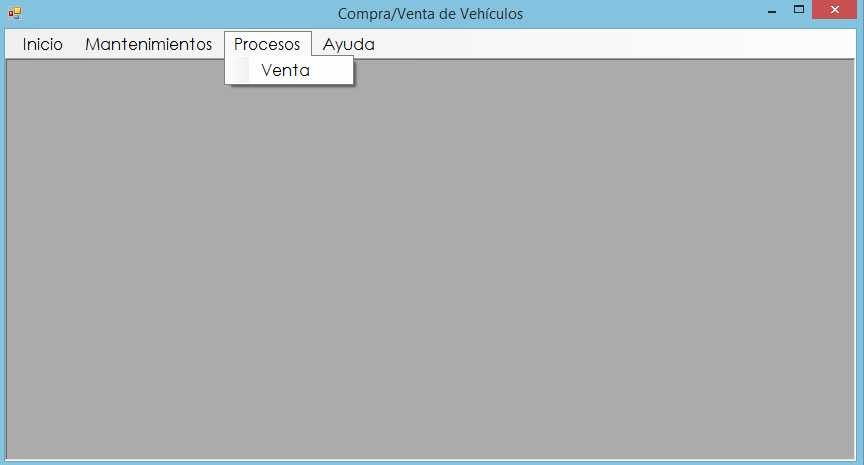

Proceso Venta
El proceso de ventas tiene como objetivo registrar una nueva venta al sistema. Para ello debemos dirigirnos al menú de Procesos y luego seleccionamos la opción Venta.
Formulario
En la siguiente Figura podremos observar el Formulario que debemos llenar.